Beranda
SELAMAT DATANG DI WEBSITE RESMI SEKOLAH KAMI
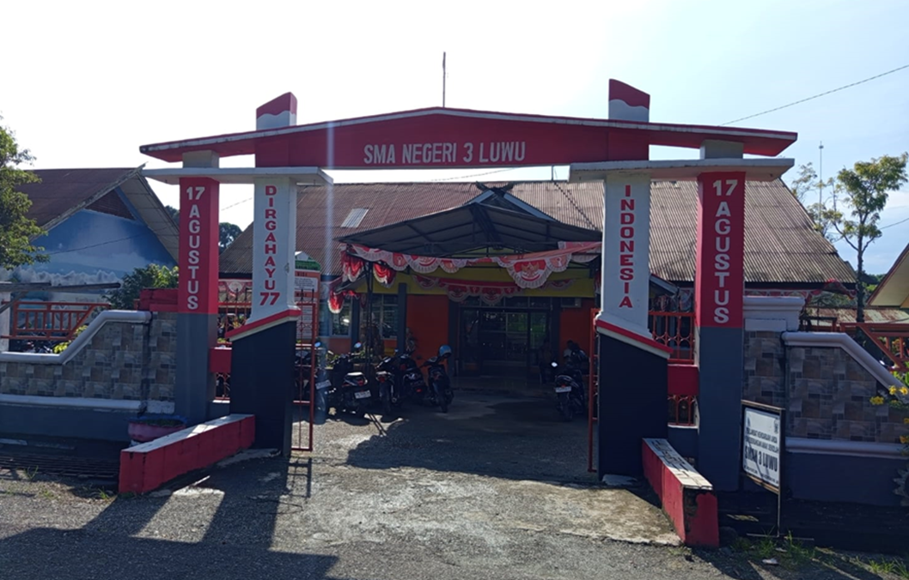
Profil Sekolah
Sejarah
SMA NEGERI 3 LUWU adalah salah satu sekolah tertua di Kabupaten Luwu, Provinsi Sulawesi Selatan. Sekolah ini telah berdiri sejak beberapa dekade lalu dan menjadi lembaga pendidikan yang berperan penting dalam mencetak generasi penerus bangsa. Dengan fasilitas yang terus berkembang dan tenaga pengajar yang kompeten, SMA Negeri 3 Luwu tetap menjaga komitmennya dalam memberikan pendidikan berkualitas. Selain prestasi akademik, sekolah ini juga dikenal aktif dalam kegiatan ekstrakurikuler yang mendukung pengembangan karakter dan bakat siswa.
Visi & Misi
Visi: Unggul dalam mutu, berpacu dalam prestasi, Beriman dan Bertakwah kepada Tuhan Yang Maha Esa serta berwawasan Lingkungan.
Misi:
1. Melaksanakan Pembinaan Keagamaan. 2. Melaksanakan Pembelajaran yang Efektif dan Proaktif. 3. Mewujudkan Iklim Sekolah yang Bersih, Indah, Nyaman dan Bersih. 4. Melaksanakan Pembinaan Profesionalisme Guru secara Berkelanjutan. 5. Melaksanakan Pembinaan Pengembangan Diri secara Kontiniu. 6. Menciptakan Suasana Lingkungan Sekolah yang Kondusif.Struktur Organisasi
Struktur organisasi sekolah terdiri dari Kepala Sekolah, Wakil Kepala Sekolah, Guru, dan Staf.

Program Pendidikan & Ekstrakurikuler
- Program Akademik: Ilmu Pengetahuan Alam (IPA)dan Ilmu Pengetahuan Sosial (IPS).
- Ekstrakurikuler: Pramuka, Paskibra, Seni Musik, Olahraga
Ekstrakurikuler Kami

MPK

PRAMUKA
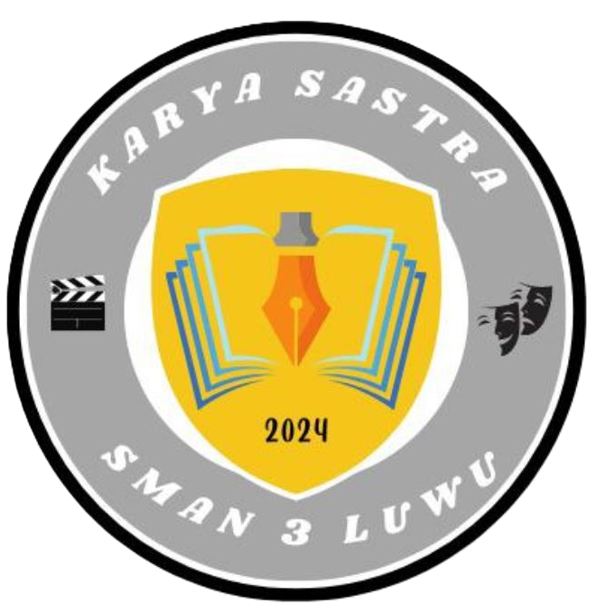
KARYA SASTRA
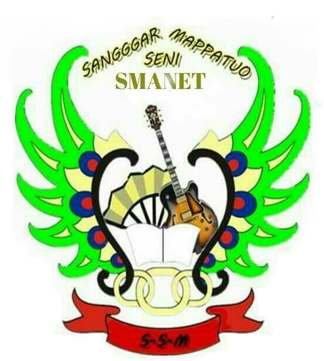
SANGGAR SENI
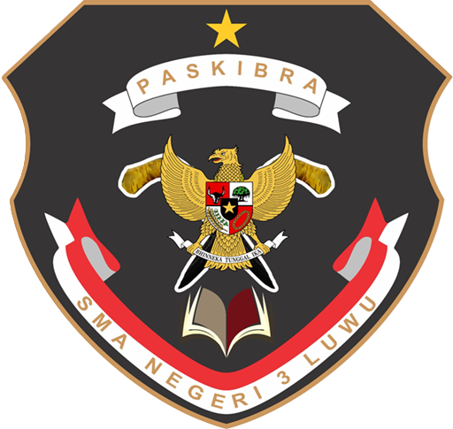
PASKIBRAKA
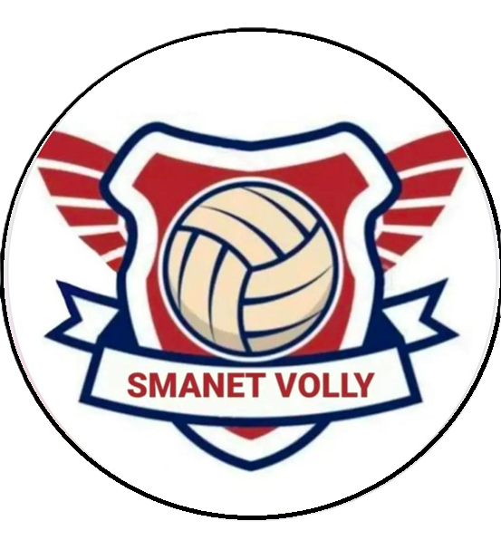
VOLLY BALL
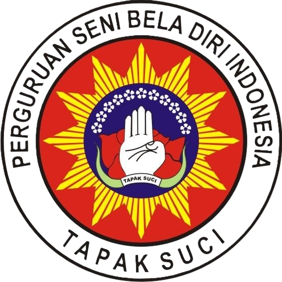
TAPAK SUCI

PALANG MERAH

SISPALA

DRUM BAND
ROHIS

FUTSAL
Galeri Kegiatan
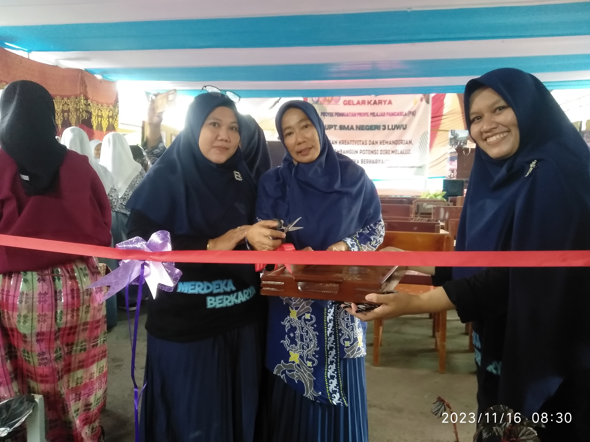


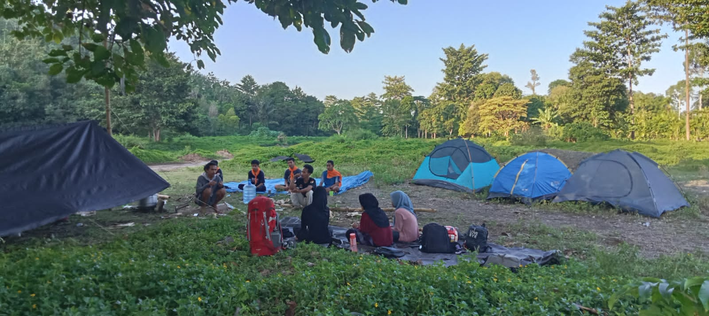

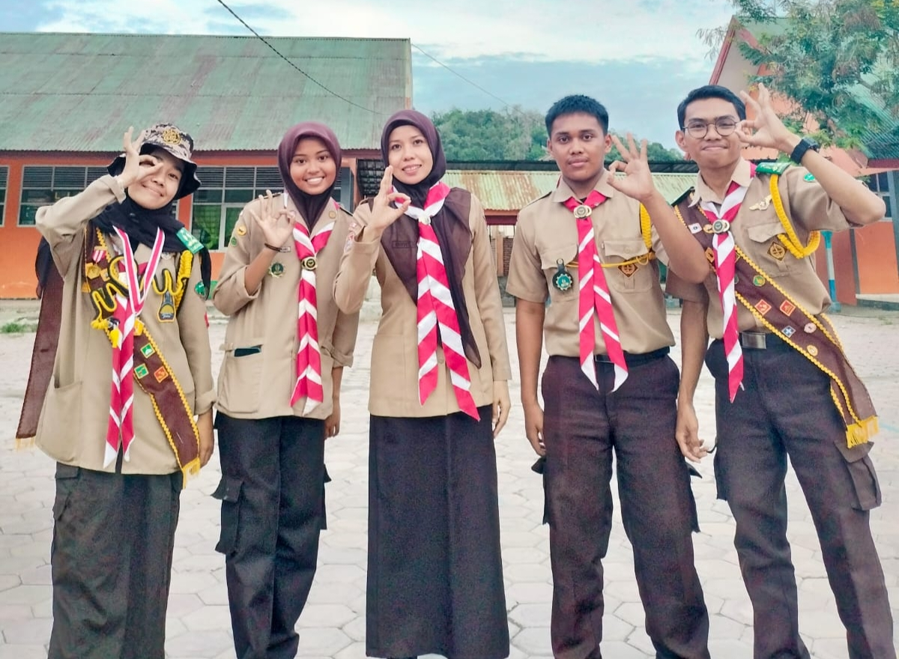


Berita dan Pengumuman
SISTEM PENERIMAAN MURID BARU (SPMB) TAHUN 2025
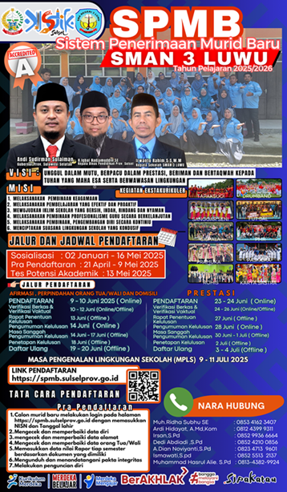
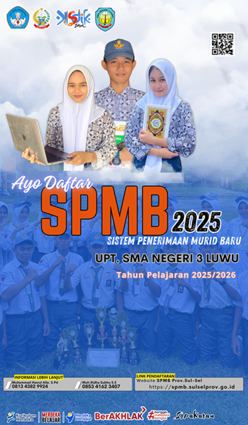
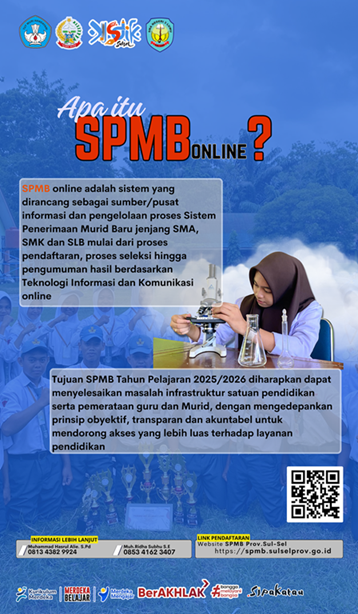
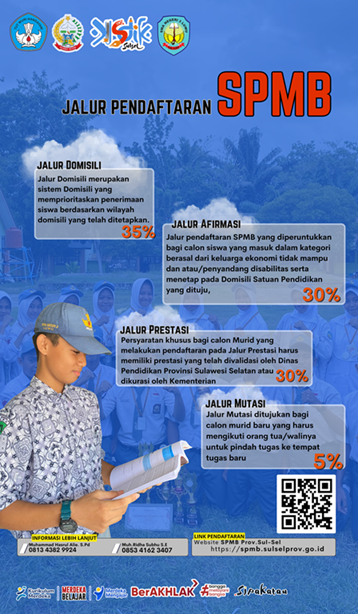
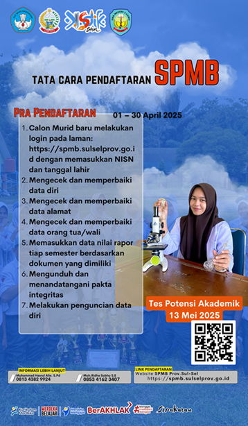

Kontak Sekolah
Alamat: Jl. Pendidikan, kel.Larompong. Kab.Luwu
Telepon/Hp: +62 81242973662
Email: sma3luwu@gmail.com